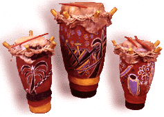

HOME FUNDEF

| |
|
Las fotos se pueden cliquear para mostrar otra foto del instrumento en contexto humano, o más grande. Muy pronto, se ofrecerá un video corto de su ejecución. El sonido está en varios formatos (AIFF, WAV, AU), y se pueden escuchar desde cualquier plataforma sin la necesidad de un download, con el plug-in de Netscape 3.0, Liveaudio. También se pueden escuchar con cualquier helper de audio como SoundApps entre otros. Ver Instrucciones para mayor información de como utilizar estos recursos.
Las fotografías de los instrumentos están disponibles en formato de tarjeta postal. Las grabaciones de los sonidos instrumentales (de más duración de lo que aquí se escucha), están editados en una serie de cuatro discos LP, próximamente disponible en CD. Ver Ventas.